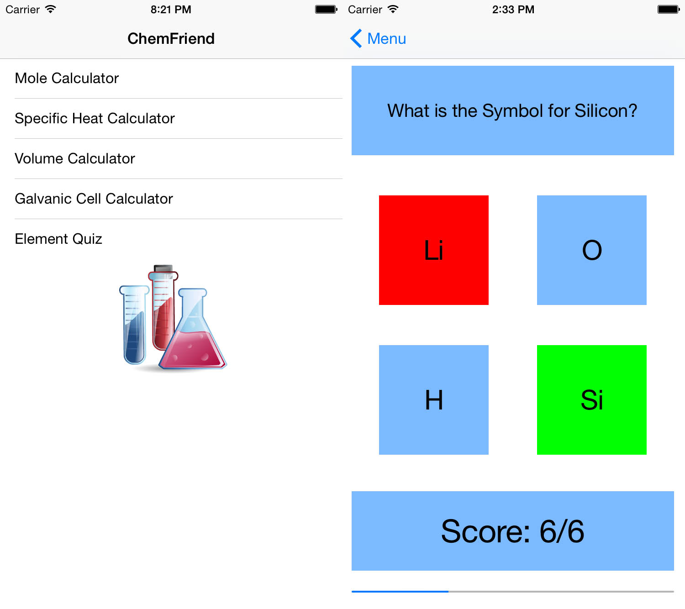

Past
My high school experience is relatively rich compared to others as my school offered IT from a really early age. Being able to do basic web development in Year 8 sparked my interest resulting in continuing to IST in Year 9 & 10 followed by Software Design and Development for Year 11 & 12.
The schools I attended were:
- Mater Dei Primary (K - 6)
- The Scots College (7 - 12)
My interest in computers started in Primary school having access to an computer reasonably young. Playing games and fixing peoples mundane problems led me to where I am today.
During my high school years I tried to gain experience with as many programming languages as possible, learning:
- HTML
- CSS
- Python
- Visual Basic
- Javascript
- Java
- Objective C
- Swift
For my Year 12 SDD Major work I built an iOS app called ChemFriend. Building this was a great experience and I learnt a lot about the software development cycle and how to manage time on a project effectively (Don't leave it to the last minute). Overall I was highly successful in Software Design and Development finishing Rank 1, achieving 95% in the Catholic Trial, 98% in my Major work and a Band 6.
 Two screens of my Major work ChemFriend.
From Year 10 I knew that I wanted to become a Software developer, and as such this made me extremely unmotivated for my other subjects. I enjoyed Maths and English, however the knowledge that most if not all of the other things I was learning would not directly influence or progress my future really annoyed me.
Overall I know that I underachieved in the HSC, however my goal was gaining placement into the BIT co-op program, and with that outcome I am happy to justify my decreased work ethic.